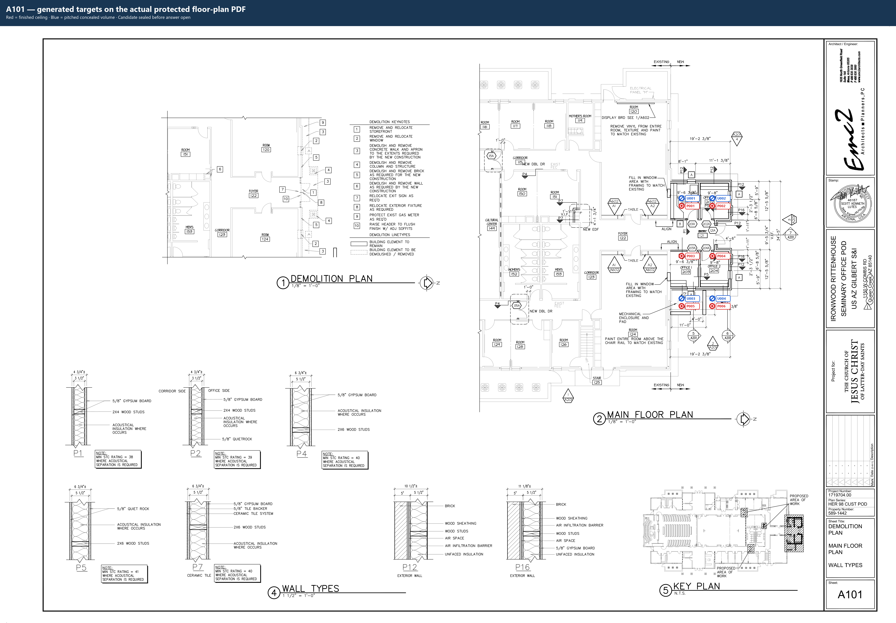
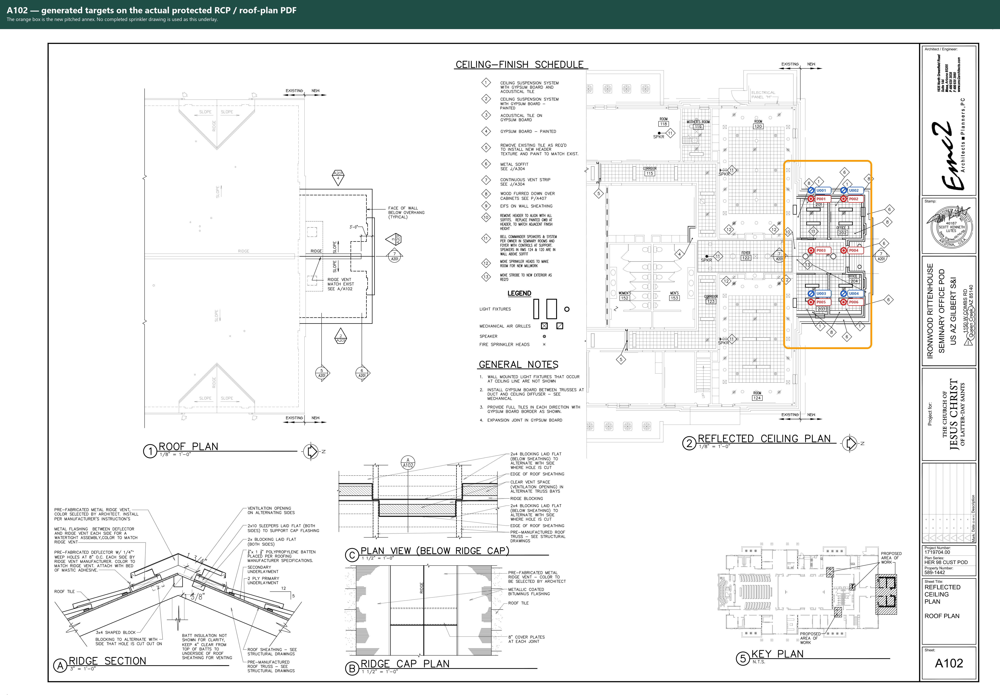
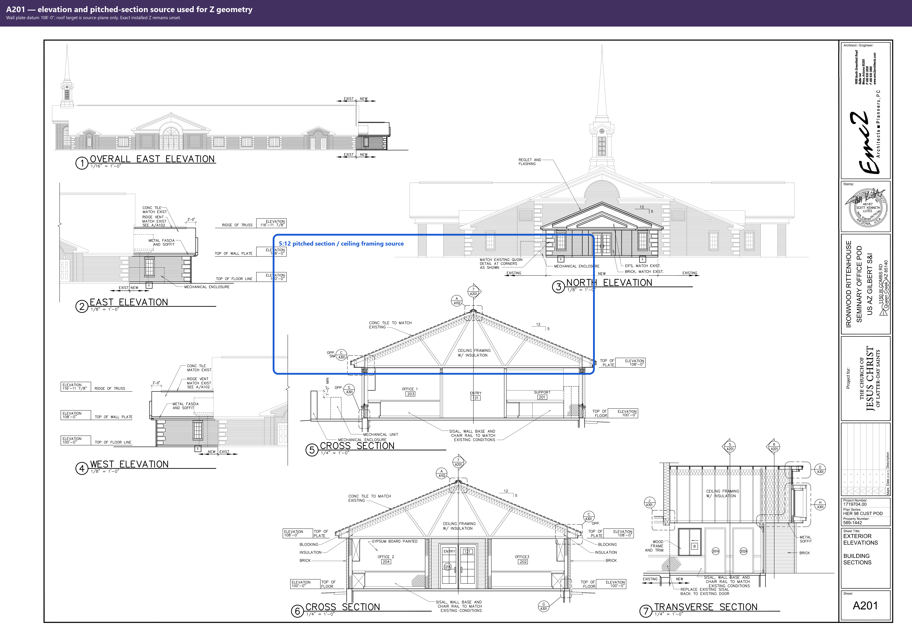
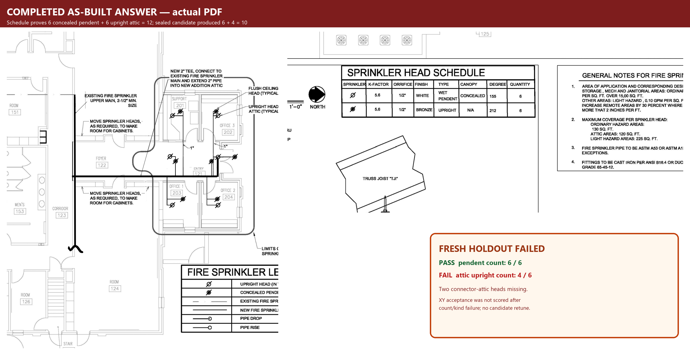
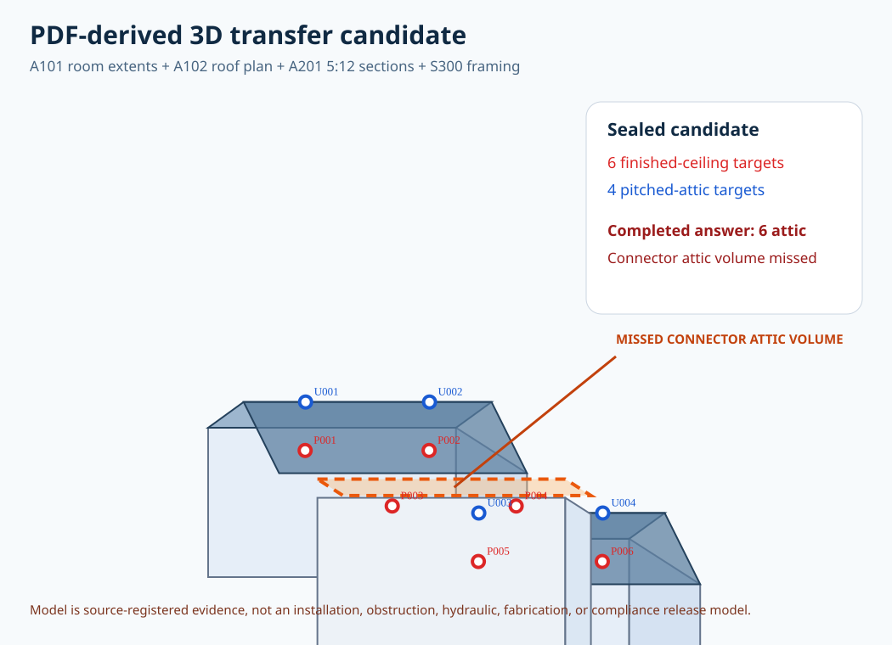

10sealed candidate heads
12completed as-built heads
6 / 6pendent parity
4 / 6attic upright failure





Fresh-project placement, obstruction clearance, compliance, hydraulics, fabrication, and field release remain blocked. The candidate was not retuned after the answer was opened.